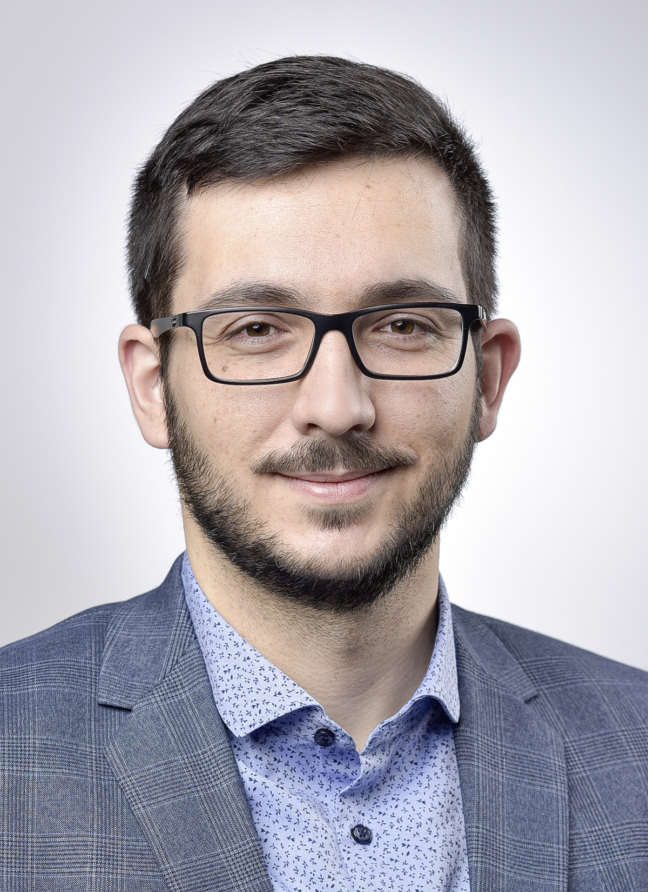
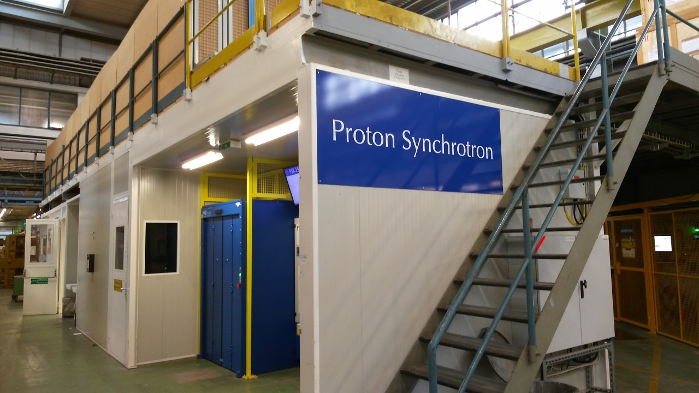
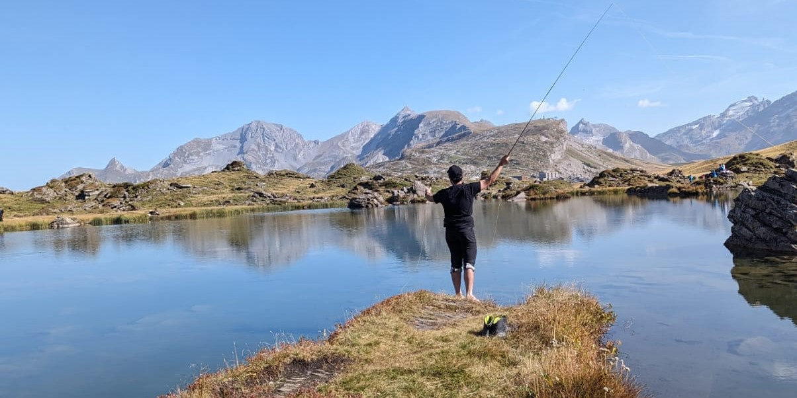

Ich heisse Ervin Mazlagic und bin der Gründer von Reverse Electron.
Aufgewachsen bin ich in der Region Luzern und habe als Kind auch kurze Zeit im Ausland gelebt.
Nach der Oberstufe habe ich für ein Jahr die Fachmittelschule in Luzern besucht. Danach schloss ich meine Lehre als Elektroniker EFZ bei der Schindler Berufsbildung mit Ehrenmeldung ab. Während dieser Zeit habe ich meine ersten Erfahrungen in der Nachhilfe und der Betreuung von Jugendlichen gemacht.
Anschliessend habe ich die Berufsmittelschule abgeschlossen und danach sowohl das Bachelor- als auch das Masterstudium berufsbegleitend und mit einem Auslandssemester absolviert.
Meine Arbeitserfahrung habe ich in unterschiedlichen Positionen in der Industrie, Lehre und Forschung gesammelt – darunter Schindler Aufzüge AG, Hochschule Luzern und CERN.

Proton Synchrotron, CERN, 2020.
Das Proton Synchrotron (PS) ist Teil des Large Hadron Collider (LHC) Komplexes und liegt zwischen dem Proton Synchrotron Booster (PSB) und dem Super Proton Synchrotron (SPS). An meinem ersten Arbeitstag beim CERN habe ich dieses Foto beim Proton Synchrotron (PS) gemacht - und damit ging für mich ein kleiner Traum in Erfüllung.
Berufliches
Ich bin Ingenieur und Praxisausbildner für Lernende Elektroniker/innen EFZ. Ich verfüge über langjährige private und professionelle Erfahrungen im Umgang mit autistischen Personen.
Insbesondere habe ich auch Erfahrungen mit autistischen Lernenden. Hierzu gehören auch die Korrespondenzen mit den Eltern, der IV, den Coaches für die Berufsintegration, der Berufsschule/BM sowie den Coaches für die autismusspezifische Betreuung. Ich unterstütze in meiner Tätigkeit die Lernenden auch bei Anträgen und der Zukunftsplanung, z.B. der Berufsmaturität oder dem Studium.
Durch meinen Werdegang habe ich alle gängigen Stationen des Schweizer Schulsystems durchgemacht und kenne diese aus eigener Erfahrung: Lehrstellensuche, Aufnahmeprüfungen, Mittelschule, Schulabbruch, Nachhilfe, Lehre, BM, berufsbegleitendes Studium BSc und MSc sowie Auslandspraktika.
Qualifikation
Berufserfahrung
- Praxisausbildner Elektroniker EFZ, Schindler Aufzüge AG
- Senior Engineer Hardwareentwicklung, Schindler Aufzüge AG
- Wissenschaftlicher Mitarbeiter, HSLU
- Wissenschaftlicher Assistent, HSLU
- External Participant, CERN
- Technical Student, CERN
- Entwicklungsingenieur, Schindler Aufzüge AG
- Hardwareentwickler, Schindler Aufzüge AG
Du möchest noch mehr über meine beruflichen Erfahrungen einsehen? Kein Problem! Schaue bei meinem LinkedIn Profil vorbei. Dort findest du weitere Details zu meinen unterschiedlichen Stationen, Artikel, Posts, Diskussionsbeiträge und vieles mehr.
Ausbildung
- Master of Science in Engineering, HSLU
- Bachelor of Science in Elektrotechnik (double degree), HSLU
- Signalverarbeitung & Kommunikationssysteme
- Energiesysteme
- Technische Berufsmaturität, Luzern
- Elektroniker EFZ, Schindler Berufsbildung
- Fachmittelschule Basisjahr, Luzern
Weiterbildung
Technik
- Advanced Digital Hardware Design, FEDEVEL Academy
- Failure Mode and Effect Analysis (FMEA) Training, TÜV Süd
- Embedded Linux for Software Developers, Deep Insight, bbv
- Embedded Linux Deep Insight, bbv
Autismus, Coaching, Berufsbildung
- Autismus-Spektrums-Störung, Brändi
- Autism and Mental Health, Curtin University
- Berufsbildner, Berufsbildner AG
Online-Kurse
- Coaching for Success, Skillsoft
- Coaching, Feedback, and making Choices, Skillsoft
- Overcoming Unconscious Bias in the Workplace, Skillsoft
- Understanding Unconscious Bias, Skillsoft
- Proven Tactics for Improving Teams' Psychological Safety (MIT SMR), Skillsoft
- Helping Neurodivergent Employees Succeed (MIT SMR), Skillsoft
- Providing Feedback to Support Neurodiverse Employees (MIT SMR), Skillsoft
- Neurodiversity in the Workplace, Skillsoft
Selbststudium und Literatur
- Autism in the Workplace - Creating Positive Employment and Career Outcomes for Generation A
- The Neurodiversity Edge - The Essential Guide to Embracing Autism, ADHD, Dyslexia, and Other Neurological Differences for Any Organization
- Kein Anschluss unter diesem Kollegen - Ein Autist im Job
Nachhilfe und Unterricht
- Private Nachhilfe - Einzelpersonen und Kleingruppen
- Tutorate auf Stufe FH - Stochastik, Elektrotechnik
- Labore auf Stufe FH – Elektronik, Regelungstechnik, Physik
- Programmierkurse – Embedded C, Matlab/GNU Octave
- Schnupperlehren Elektronik – Einzelpersonen und Gruppen

Ich beim Fliegenfischen am Blauseeli auf der Melchsee Frutt, 2023.
Wenn ich nicht im Büro oder im Labor bin, verbringe ich meine Zeit am liebsten in der Natur. Wenn das Wetter passt, geniesse ich die Einsamkeit am Wasser - egal ob mit oder ohne Fliegenrute.